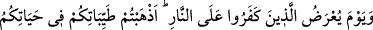
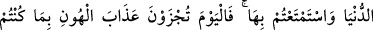
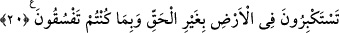

Babanın oğluna iyiliğini görmüyorum.
Kız kardeşler anneleriyle savaş ve didişmede,
Çocukların babalarına kötülük beslediğini görüyorum.
Hadis-i şerifte şöyle buyurulmaktadır: “Ağabeyin küçük kardeş üzerinde olan hakkı,
ana babanın evlâd üzerinde olan hakkı gibidir. Kimin ana babası vefat etmiş olup
onlara iyilik edememişse artık onlar için mağfiret taleb etsin. Onlar adına sadaka
versin ki böylece ana babasına iyilik edenlerden yazılmış olsun. Kim günde beş defa
ana babasına duâ ederse haklarını edâ etmiş olur. Kim ana babasının kabrini her
Cuma (haftada bir) ziyaret ederse ana babasına iyilik edenlerden yazılır.”[35]
Hayatta olanların ölülere duâ etmeleri ve onlara mağfiret taleb etmeleri onlara
hediyedir. Ölüler cuma gecesi, cuma günü ve cumartesi gecesi güneş doğuncaya kadar
yapılan ziyaretlerde ziyaretçileri bilirler. Çünkü cuma günü pek faziletli bir gündür.
Kişi verdiği sadakalarda müslüman ana babasına da niyet eder. Bu durum onun
sevabından bir şeyi eksiltmez. Sadaka veren gibi, bir o kadar da ana babası sevap alır.
Büyüklerden biri şöyle demiştir: Kişi yolda sağına bir taş atıp babasına, soluna bir
taş atıp anasına niyet eder. Yine bazıları öfkesini yutup bundan ana babasına iyilik
etmeyi murad ederdi.
Bunda şuna delil vardır ki kulun yapmış olduğu bütün iyiliklerin ana babasına iyilik
olarak değerlendirilmesi mümkündür. Yeter ki niyet hâlis olsun. Öyleyse ana baba ister
hayatta olsun, ister vefat etmiş olsun evlâd ana babasına iyilik etmelidir. Ancak şirk ve
isyanda itâat etmemelidir.
Allah’tan gâfil olan bin akraba,
Allah’a âşina olan tek bir yabancıya fedâ olsun.
Allah Teâlâ şöyle buyurmaktadır: “Eğer onlar seni hakkında bilgin olmayan bir
şeyi bana ortak koşman için zorlarlarsa onlara itâat etme.” (Lokman, 31/15).
20. İnkâr edenler ateşe arzolunacakları gün (onlara şöyle denir): Dünyadaki
hayatınızda bütün güzel şeylerinizi harcadınız, onların zevkini sürdünüz. Bugün ise
yeryüzünde haksız yere büyüklük taslamanızdan ve yoldan çıkmanızdan dolayı
alçaltıcı bir azap göreceksiniz!